Chapter 2 Two Continuous Variables
As mentioned earlier, the application by default selects two continuous variables for correlation, Gestational age (weeks) on X axis and Birth Weight (g) on Y axis. The other options, stratification variable one, stratification variable two, show dots, log scale for x axis, log scale for y axis, and confidence interval, allow the user to modify the plots. For now, let us keep all the options to default and see the resultant plot.
2.1 Basic correlation plot
When all the options are left to default and are submitted, the following correlation plot is generated.
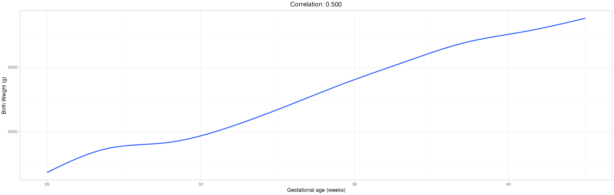
The following options were selected for the above plot and all the check boxes were unchecked.
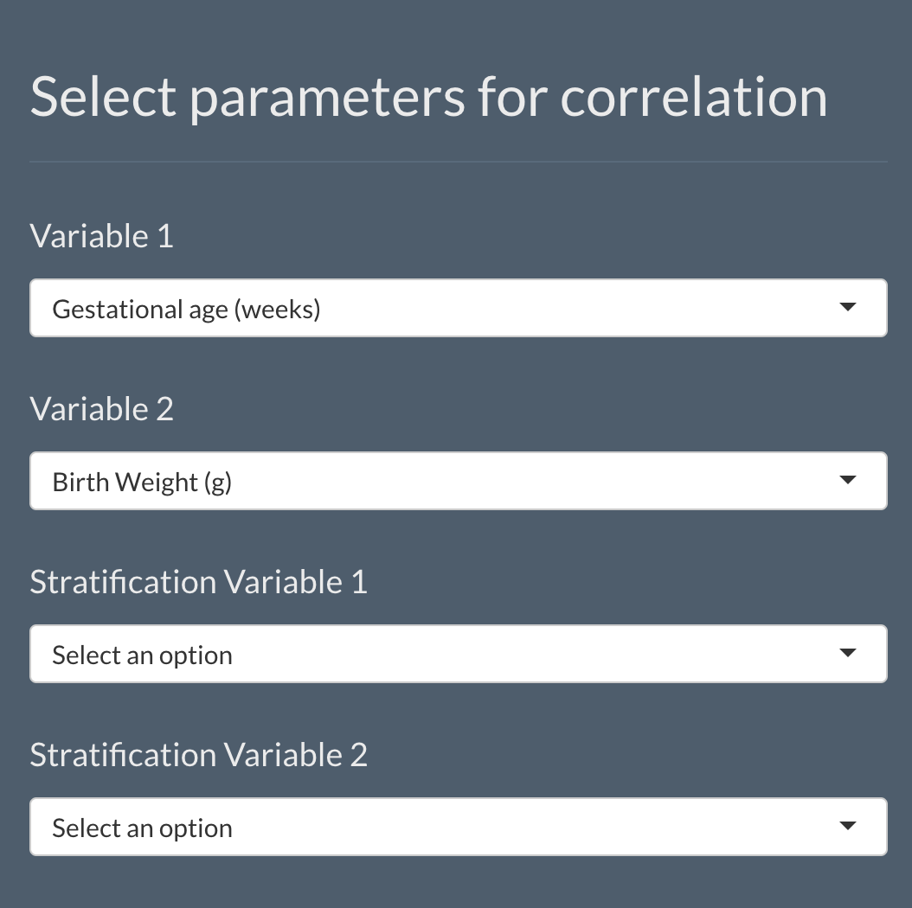
When all the check boxes are selected as below,
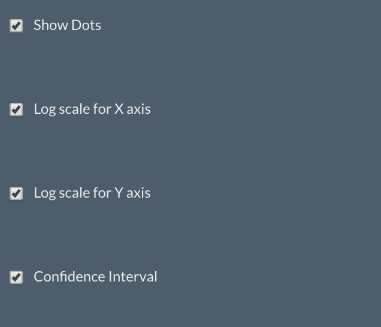
The plot will be modified as,
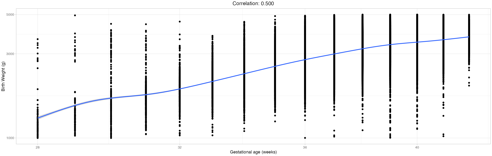
In the above plot, both the axes have been changed to logarithmic scale, data points and confidence interval were added.
You can also notice that two slide bars appear on the side panel to help the user to adjust the height and width of the plots.
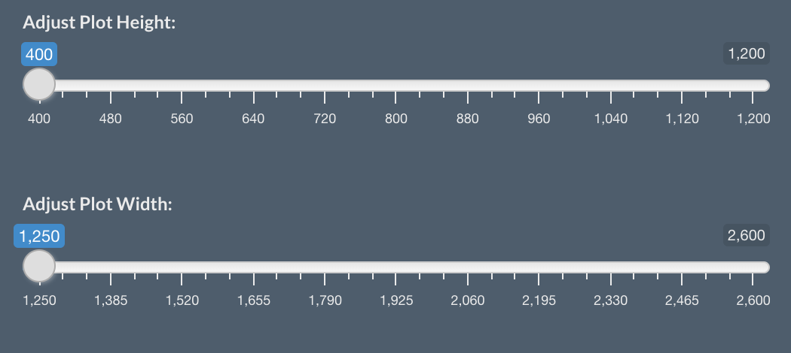
Now that we have seen a basic correlation between two continuous variables, let us use stratification variables to see how the plots change.
2.2 Correlation plots with one stratification variable
The user has the option to divide the entire dataset based on a categorical variable and view the correlation between selected variables for each category. For example, the user can select Sex as the stratification variable to see the correlation between selected variables for each gender. The selected options would be as follows,
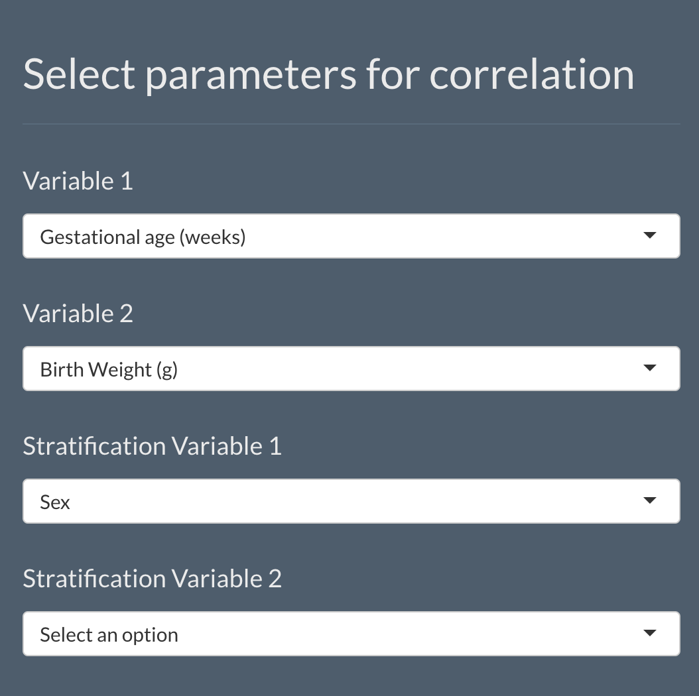
When the user selects the options as shown in the above picture, a basic correlation plot is generated as seen before along with a new plot depicting correlation between the selected variables for each category of the selected stratification variable, which is Sex in this example. The new plot would be as follows,
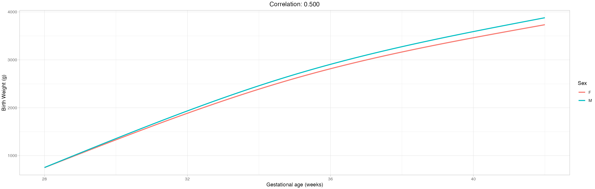
We can notice in the above plot that the entire data is divided based on gender and the correlation between selected variables is plotted seperately for each gender. The same set of plots are generated when the user selects a stratification variable two and selects nothing for stratification variable one. This means, the application generates a basic correlation plot and a correlation plot showing distinctive correlation lines for each category of the selected stratification variable whenever the user selects any one stratification variable, i.e., either stratification variable one or stratification variable two along with the variables for correlation.
2.3 Correlation plots with two stratification variables
Finally the user has the option to select two stratification variables. When the user does select both of them, a basic correlation plot between the selected variables, two plots showing correlation between the selected variables separately for each category of both the stratification variables (One plot for each stratification variable) and two plots showing correlation between the selected variables where in each plot the data is stratified using both the selected stratification variables are shown. For example, let us consider that the user selects Sex as stratification variable one and Ethnicity(major) as stratification variable two as below,
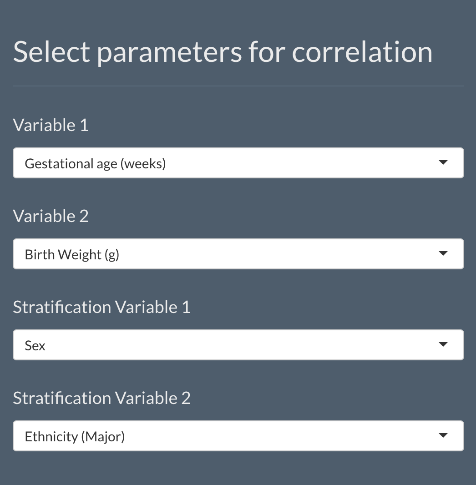
The following plots are generated apart from the basic correlation plot.
Correlation lines shown separately for each Sex.
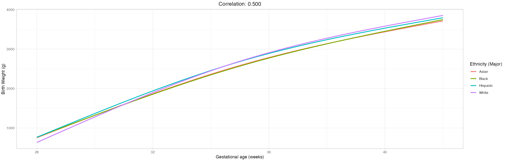 Correlation lines shown separately for each Ethnicity(major).
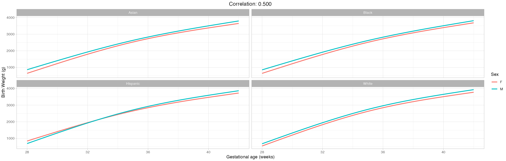 Data is wrapped by Ethnicity(major) and correlation lines shown separately for each Sex.
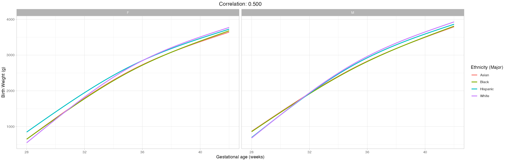 Data is wrapped by Sex and correlation lines shown separately for each Ethnicity(major).
Now that we have seen different kinds of plots the application generates when a user selects two continuous variables and different stratification variables, let us look into some technical details.
2.4 Technical details
In all the plots, the smooth lines are added using the Generalized Additive Model (GAM) unless and until a particular group of data has two little unique X values. When this case arises, Linear Model is used for modelling the relationship between the selected variables. For example, if the user selects Ethnicity(detail) as the stratification variable, then certain ethnicity groups might have less data points (less unique X values) to support the GAM method. In such cases, LM method is used only for the ethnicities that have less number of data points.
For all the plots generated, the user can add data points to the plot by selecting the check box Show dots, change X and Y axis scales to logarithmic by selecting the appropriate check boxes and add the confidence interval to the smooth lines by selecting the Confidence Interval check box. The user can also adjust the height and width of the plots by adjusting the values of the slide bars that appear on the side panel.